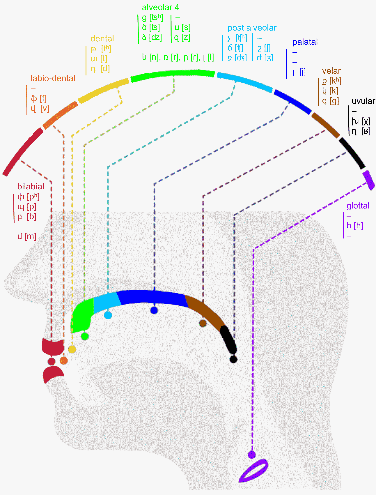

| N | HY | Name | IPA |
| 1 | Ա ա | ɑjb | ɑ |
| 2 | Բ բ | bɛn | b |
| 3 | Գ գ | gim | g |
| 4 | Դ դ | dɑ | d |
| 5 | Ե ե | jɛʧʰ | jɛ, ɛ |
| 6 | Զ զ | zɑ | z |
| 7 | Է է | ɛ | ɛ |
| 8 | Ը ը | ətʰ | ə |
| 9 | Թ թ | tʰɔ | tʰ |
| 10 | Ժ ժ | ʒɛ | ʒ |
| 11 | Ի ի | ini | i |
| 12 | Լ լ | ljun | l |
| 13 | Խ խ | χɛ | χ |
| 14 | Ծ ծ | ʦɑ | ʦ |
| 15 | Կ կ | kɛn | k |
| 16 | Հ հ | hɔ | h |
| 17 | Ձ ձ | ʣɑ | ʣ |
| 18 | Ղ ղ | ʁɑt | ʁ |
| 19 | Ճ ճ | ʧɛ | ʧ |
| 20 | Մ մ | mɛn | m |
| 21 | Յ յ | hɛj | j |
| 22 | Ն ն | nu | n |
| 23 | Շ շ | ʃɑ | ʃ |
| 24 | Ո ո | ʋɔ | ʋɔ, ɔ |
| 25 | Չ չ | ʧʰɑ | ʧʰ |
| 26 | Պ պ | pɛ | p |
| 27 | Ջ ջ | ʤɛ | ʤ |
| 28 | Ռ ռ | rɑ | r |
| 29 | Ս ս | sɛ | s |
| 30 | Վ վ | vɛv | v |
| 31 | Տ տ | tjun | t |
| 32 | Ր ր | rɛ | ɾ |
| 33 | Ց ց | ʦʰɔ | ʦʰ |
| 34 | ՈՒ Ու ու | u | u |
| 35 | Փ փ | pʰjur | pʰ |
| 36 | Ք ք | kʰɛ | kʰ |
| 37 | Օ օ | ɔ | ɔ |
| 38 | Ֆ ֆ | fɛ | f |
| և | jɛv | jɛv, ɛv |
| Front | Center | Back | |
| Close | ի i | ու u* | |
| Mid | է ɛ | ը ə | ո, օ ɔ |
| ե ɛ | |||
| Open | ա ɑ |
* ու is rounded vowel.
| LABIAL | DENTAL | ALVEOLAR | POST ALVEOLAR | VELAR | |
| Stop | փ pʰ | թ tʰ | ք kʰ | ||
| պ p | տ t | կ k | |||
| բ b | դ d | գ ɡ | |||
| Affr | ց ʦʰ | չ ʧʰ | |||
| ծ ʦ | ճ ʧ | ||||
| ձ ʣ | ջ ʤ |
| LABIO DENTAL | ALVEOLAR | POST ALVEOLAR | UVULAR | |
| Fricat | ֆ f | ս s | շ ʃ | խ χ |
| վ v | զ z | ժ ʒ | ղ ʁ |
| LABIAL | ALVEOLAR | PALATAL | GLOTTAL | |
| Nasal | մ m | ն n | ||
| Trill | ռ r | |||
| Flap | ր ɾ | |||
| Lateral | լ l | |||
| Approx | յ j | |||
| Fricat | հ h |
